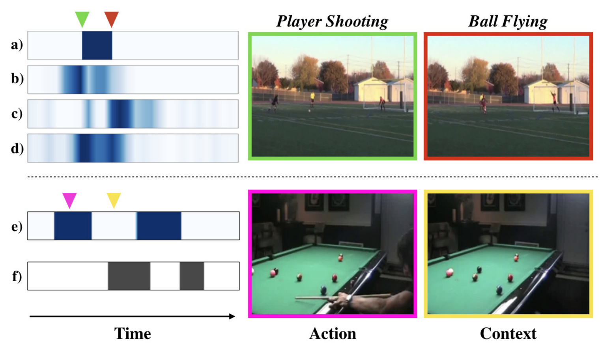
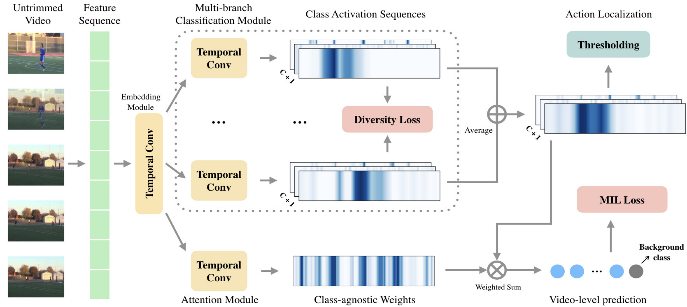

Action Localization 任务是对Action Recognition任务的提高版，不仅仅需要识别出视频中的是什么动作，还需要知道这个动作起始帧和终止帧的具体位置。如果是Action Recognition是图片分类的话，那么Action Localization就是目标检测，不仅仅要知道bounding box里面的是什么，还要知道这个bounding box应该画在哪里。
AAAI-2020 Background Suppression Network for Weakly-supervised Temporal Action Localization
Weakly-supervised
这里的弱监督指的是只标注了视频中包含什么行为（一个视频中可能包含多个行为），但是没有标注这个行为的起始帧和终止帧。也就是说，模型需要根据video-level的标注，回归得到每个行为具体发生的起止时间，相对来说这个任务更加困难。
有学者将上述问题化归为Multiple Instance Learning。MIL，简单来说，就是一个集合中有多个实例，如果每个实例都是负样本，那么这个集合就是负样本；如果这个集合中至少有一个正样本，那么这个集合就是正样本，我们的任务是去预测每个集合的类别。因为视频是由一帧帧图像组成的，那么action localization就可以理解为是我找到一个视频片段，如果这个片段中至少有一帧包含我所关注的行为，那么我就认为这个片段是一个正样本（就所关注的行为而言），否则就是负样本，至于这个片段是否tight，那这个就需要其他方法来进一步优化了。
但本文的作者认为，视频中有大量帧是不包含任何感兴趣的动作的，如果不单独加入一个background的类，那这些没有任何感兴趣的动作的帧会被迫分类为某一个动作，这是不合适的，所以作者第一步就是加入了background这个类别。
这时候目标检测里所存在的类别不均衡的问题就出来，如果加入background，那么必然大多数帧都应该是background，这时候background和包含感兴趣的动作的帧的数量就会有很大的差异，导致类别不均衡。（目标检测中的Focal Loss说不定可以一试？）
针对这个问题，作者提出了使用Filter Module来找出background并过滤的方法来解决。
Method

上图就是作者提出的BaSNet（Background Suppression Network），左边的特征提取用的是I3D双流网络，特征提取部分不参与网络的训练。给定一个长度为\(T\)帧的视频片段，分别提取RGB和光流特征\(R^{F\times T}\)，拼接起来之后得到整个片段的特征\(R^{2F\times T}\)。
网络采用双分支的结构，第一个base branch和其他网络类似，通过一个\(1\times 1\)卷积得到Class Activation Sequence(CAS)。若数据集中一共有\(C\)个动作类别，那么得到的CAS就是\(R^{(C+1)\times T}\)，通道\(i\)都表示片段中每一帧包含动作\(i\)的得分，然后计算每个通道top-k的均值得到\(R^{(C+1)}\)，设就是video-level class score了；对于第二个Suppression branch，就是多了一个加权的过程，对片段的特征做两个\(1\times 1\)卷积，得到每帧不是background的概率，将这个概率和片段特征相乘之后再获得CAS，方法和base branch相同，并且卷积的参数是共享（这也可以？？）。
这里有一个小细节，在base branch，所有帧的background这个类都设置为1，而在suppression branch这都设置为0，作者说这是为了让suppression branch正确区分是否是background。
模型的损失是Binary Cross Entropy，就是每次判断是否是类别\(i\)，而不是去判断他是C类中的哪一个，这样可以降低其他类别的影响，适合于Multi-label的任务（Multi-class是指数据集中的样本可被分为2以上的类别，Multi-label是指数据集中每个样本可以属于多个不同的类别）。
最后设定阈值，超过阈值的认为是包含感兴趣的动作，然后把这些连起来就是一个候选动作区间。至于得到这些区间之后怎么继续下去，作者说和下面这篇论文一直。
CVPR-2019 Completeness Modeling and Context Separation for Weakly Supervised Temporal Action Localization

主要针对两个问题，一是动作的完整性，比如上图上方射门的例子，包含运动员射门和球飞行两个自动做，作者通过设计多个不同的分支网络，让他们分别关注动作的不同部分，最后求均值来获取更好的CAS。二是动作的上下文和一般的background是不一样的，例如上图下方，台球桌对识别打台球的动作是有帮助的，而且通常出现在动作发生的前后，其分布是有一定规律的，但是background的分布是随机的，同时这些动作上下文也会干扰动作区间的检测，作者通过构造难例来解决。
Method

上图是作者提出的模型结构，首先是提取视频特征\(R^{T\times D}\)，这里的\(T\)作者说是片段数（the number of snippets）。因为预训练的特征提取网络所提取的特征可能不完全适应action localization，所以添加一个Embedding层，得到特征\(R^{T\times F}\)。这个特征分别被被送到\(K\)分类分支中去，其实就是一个\(1\times 1\)卷积，然后再做Softmax得到CAS。为了防止这\(K\)各分支学习到相同（或极其相似）的信息，作者加入了一个diversity loss，其中\(\overline{A^i_{\star,c}}\)表示Softmax之后第\(i\)个branch的第\(c\)个类别的CAS \[
\mathcal{L}_{div}=\frac{1}{K(K-1)(C+1)/2}\sum_{c=1}^{C+1}{\sum_{i=1}^{K-1}{\sum_{j=i+1}^{K}}{\frac{\overline{A^i_{\star,c}}\cdot\overline{A^j_{\star,c}}}{\Vert\overline{A^i_{\star,c}}\Vert\ \Vert\overline{A^j_{\star,c}}\Vert}}}
\] 实际上就是让各个分支之间CAS的相似度尽可能小，也就是说不同的branch要在不同的时刻得到较高的激活值，这就能解决动作完整性的，问题，相当于每个branch关注动作的不同部分，虽然单个来看是不够完整的，但是拼在一起就是一个好的结果。
作者通过实验观察到，往往会存在有一个branch值比较大，而其他branch的值接近于0，这样就会出现一个branch处于主导地位，这不是作者想要的；另一方面这\(K\)个branch就像是相互竞争，类似于GAN，所以要尽可能平很各个branch。为此，作者引入了一个另一个损失，降低每个branch中每个类的标准差（没明白为什么要最小化标准差），其中\(A^{avg}=\sum_{k=1}^K {A^k}\) \[ \mathcal{L}_{norm}=\frac{1}{K(C+1)}\sum_{c=1}^{C+1}{\sum_{i=1}^{K}}{|\Vert{A^i_{\star,c}}\Vert - \Vert{A^{avg}_{\star,c}}\Vert|} \] 最后作者又加了一个简单的Attention来学习片段的重要性，再利用它加权得到视频中含有各个动作的概率： \[ \overline{p}=softmax{\sum_{t=1}^T{att_tA^{avg}_{t,\star}}} \] 上述这些模块就解决了动作完整性的问题，整体的损失函数为： \[ \mathcal{L}=\alpha\mathcal{L}_{div}+\beta\mathcal{L}_{norm}+\mathcal{L}_{mil} \]
Localization
有点复杂。输入一个测试视频，得到它包含每个动作的概率，不考虑background，去掉所有包含这个动作的概率小于于0.1的CAS；在剩余的CAS中，利用\(\overline{A^{avg}_{\star,c}}\)作为阈值选出大于阈值的片段，然后这些片段就作为一个proposal。接下来使用一些公式来个每个片段打个分，实际上就是他同时考虑这个片段的CAS均值和这个片段附近的CAS均值（可这个分有什么用呢？答：作为区间的置信度，用于NMS）

CVPR-2018 Weakly Supervised Action Localization by Sparse Temporal Pooling Network
作者认为行为可以通过识别视频中的一些关键片段来识别，所以作者提出了一个能够自动学习片段重要性的网络，并自动选择一个具有代表性的自己来识别视频中的行为。

每个视频被分为\(T\)个片段，每个以第\(t\)帧为中心的视频片段都被表示成特征\(x_t\in R^m\)，每个特征通过一个Attention Module得到一个该片段的权重值\(\lambda_t\)，根据这些权重值加权求和后得到视频级的特征\(\overline{x}=\sum_{t=1}^T{\lambda_t x_t}\)，这一视频级的特征被用来估计视频中包含每种动作的概率，并用多标签交叉熵损失函数来优化。而对学习得到的权重\(\lambda=[\lambda_1, \lambda_2,\cdots, \lambda_T]\)，为了能够让让模型自动选择具有代表性的子集，所以使用了L1正则化来增加\(\lambda\)的稀疏性。上述两个损失函数组合之后得到最终的损失函数： \[ \mathcal{L}=\mathcal{L}_{class}+\beta\cdot\mathcal{L}_{sparsity} \] 同时，作者提出了Temporal Class Activation Map（T-CAM），其实就是一个公式变换。注意每个片段的特征\(x_t\in R^m\)，公式里的\(m\)是特征维数。 \[ \begin{align*} s^c&=\sum_{k=1}^m{w^c_k\overline{x}_k} \\ &=\sum_{k=1}^m{w^c_k\sum_{t=1}^T{\lambda_t x_{t,k}}} \\ &=\sum_{t=1}^T{\lambda_t\sum_{k=1}^m{w^c_k x_{t,k}}} \end{align*} \]
作者说他的T-CAM可以表示为\(a_t=(a_t^1,a_t^2,\cdots,a_t^T)^T\)，其中\(a_t^c=\sum_{k=1}^m{w^c_k x_{t,k}}\)（这一步实现还是挺有意思的，作者在测试的时候直接获取了全连接层的权重矩阵）
Localization
以RGB为例，那么首先根据每个片段的权重值得到加权后的T-CAM \[ \psi_t^c=\lambda_t\cdot sigmoid(a_t^c) \] 记者就是普通的阈值法获得temporal proposal，每个proposal可以表示为\([t_{start}, t_{end}, score]\)，score的计算公式如下： \[ \sum_{t=t_{start}}^{t_{end}}{\lambda_{t,\star}\frac{\alpha \cdot a_{t,RGB}^{c}+(1-\alpha)\cdot a_{t,FLOW}^{c}}{t_{end} - t_{start} + 1}} \] 实际上就是对这个proposal中的T-CAM加权求和，再做一些归一化（去除proposal长度不同带来的影响）。这个score用在NMS，以前的方法是直接选最长的一个proposal，显然不够合理。